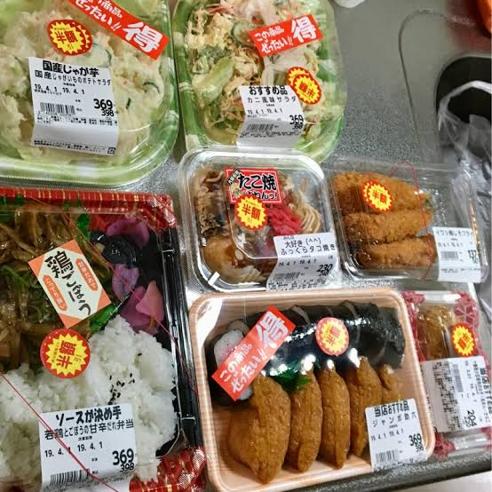

밤 11시 되면 도시락 50퍼 할인하려는거 사려고 근처 마트 뛰어감

밤 11시 되면 도시락 50퍼 할인하려는거 사려고 근처 마트 뛰어감
새우튀김,카라아게,타코야끼 같은거 스티커 붙일때 은근슬쩍 기웃기웃 하면서 대기탐.
가끔 대형 스테이크 50% 할인때 얻으면 기분좋음
홈플이랑 같네ㅋㅋㅋㅋ
연어회랑 야채고로케 제발 남아있길 기도했음
맛있겠다
살아야제
11시 전에 다털리던데 ㅠ
도시쪽은 8시 정도 20퍼 붙여질때면 다털림. 시외곽,소도시는 11~12시 50퍼 할인기회 많음
아하
밤 11시에 먹으면 소화 안 될 거 같은데....
그렇다더라
그냥 밥 해먹는디 ㄷㄷ
한국은 홈플러스는 차 타고 가야 되니 귀찮다
이온몰 GOAT
재네는 상품 둘수있는 기간이 많이 짧은가? 자주 저렇게 하는거같더라?
한국도 그래 홈플에 저런거 줏으로 자주갔음 대학생때
내가 늦게 잘 안가서 몰랐구나
한국도 저런 신선식품? 은 하루라서 한밤에 가면 20% 할인 30% 할인 많이 붙어 있음
50% 할인까지는 난 못 본 거 같음
11시는 너무 늦어
보통 10시부터 하니까 9시50분 이전에 가서 캔맥주같은거 고르면서 대기 타야됨
맛없던데 플라스틱마냥 딱딱하고
저거라도 안먹으면 식비 개지려
이제 일본 워홀은 그냥 일본 좋아서 하는 애들 말고는 할 이유가 없는듯
하면 오히려 더 손해더라
ㅁㅊ 왤케쌈?? 그냥 싼 정도가 아니라 존나 싸네
매번 저렇게 늦은시간에 사먹는 것도 고충일것 같은데
난 해먹는디
타마대 가야해
도시락전쟁
8시~9시 이 사이가 젤 좋음
방사능 덩어리를 좋다고 쳐먹네 ㅉㅉ
일본은 도시락전쟁 이라는, 반값 도시락 노리는 사람들을 주제로 라노벨도 나왔는디 한국인은 이해가 잘 안되긴하지 ㅋㅋㅋ
옥출 마트 ㅋㅋ
일본 여행가도 저렇게 먹음 ㅋㅋㅋㅋ
그리고 11시에가면 그냥 아무것도 없다 8시에는 가야된다
직원이 할인 스티커 붙일것같으면 다들 은글슬쩍 그 주위로 모임